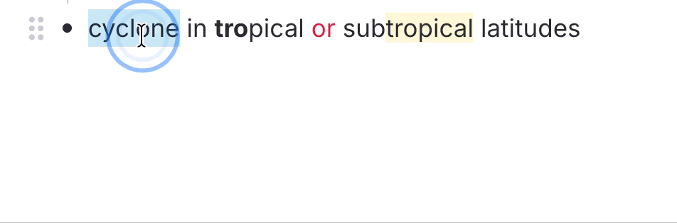
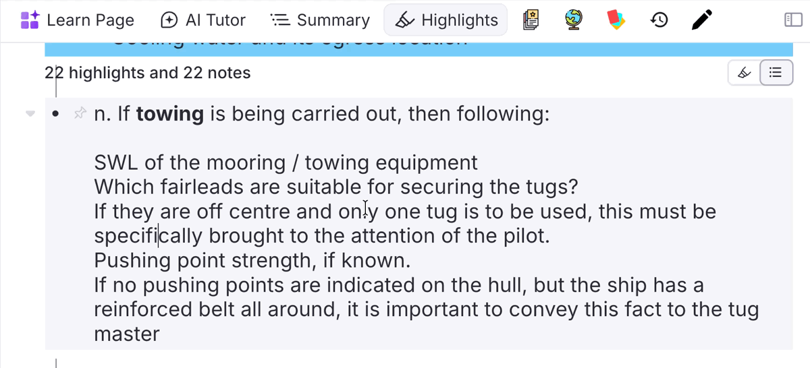

Text & Lists¶
Commands that reshape the text inside a Rem — most useful right after a PDF highlight lands in your notes as one flattened block.
Text Case Converter¶
This incorportated utility cycles selected text through three case styles with a single shortcut — just like Shift+F3 in Microsoft Word.

How it works¶
Press Shift+F3 with text selected to cycle through:
| Step | Style | Example |
|---|---|---|
| 1st press | Title Case | Cyclone in Tropical Latitudes |
| 2nd press | UPPERCASE | CYCLONE IN TROPICAL LATITUDES |
| 3rd press | lowercase | cyclone in tropical latitudes |
The plugin auto-detects the current case of the selection and always advances to the next stage, so you never have to think about where you are in the cycle.
English Title Case rules¶
Title Case follows Chicago/APA style:
- Always capitalised / Sempre maiúsculas:
- The first and last word of the selection.
-
All nouns, verbs, adjectives and adverbs.
-
Kept lowercase / Mantidas em minúsculas (unless first or last word):
- Articles / Artigos: a, an, the · o, a, os, as, um, uma…
- Prepositions / Preposições: at, by, in, of, on, to, up, as, via · de, em, por, para, com, sem, sob, sobre…
- Conjunctions / Conjunções: and, or, nor, but, for, yet, so · e, ou, mas, nem, que, se, como, pois, logo…
- Portuguese contractions / Contrações portuguesas: do, da, dos, das, no, na, nos, nas, ao, aos, pelo, pela, pelos, pelas…
Examples¶
cyclone in tropical or subtropical latitudes→ Cyclone in Tropical or Subtropical Latitudes
princípios das radiocomunicações marítimas→ Princípios das Radiocomunicações Marítimas
Acronyms and initialisms¶
Words that are uppercase by nature stay that way through Title Case — arqueação bruta (ab) becomes Arqueação Bruta (AB), never (Ab). Four signals are used, in this order:
- The acronym list. Common maritime (GT, NT, AB, TPB, DWT, LOA, IMO, MMSI, SOLAS, MARPOL, STCW, ECDIS, GMDSS…), institutional (ONU, UN, ISO, CNPJ, IBGE…) and technical (PDF, URL, HTML, API, CSV…) acronyms are built in. Add your own under IE Settings → Other → Title Case Acronyms, separated by commas or spaces.
- Initialisms and initials.
u.s.a.→ U.S.A., and a lone initial keeps its capital:o autor a. silva→ O Autor A. Silva. The dotted abbreviations that are conventionally lowercase — e.g., i.e., cf., a.m., p.m. — are exempt and behave like the minor words above. - Roman numerals used as numbers.
seção ii→ Seção II,capítulo iv→ Capítulo IV,chapter xl→ Chapter XL. See when a numeral counts as a numeral below. - Capitals already in the text. A word you wrote with two or more capitals is preserved as typed:
RO-RO,P&I,COVID-19,A/S. This signal is switched off when the whole selection is uppercase, where existing capitals say nothing about which words are acronyms — there, signal 1 does the work, soARQUEAÇÃO BRUTA (AB)still title-cases to Arqueação Bruta (AB).
A trailing plural s stays lowercase: GTs, not GTS.
Why the list matters even though capitals are preserved. Signal 4 reads what is on screen, so it cannot survive the lowercase step of the cycle — once
GThas becomegt, only the list knows to bring it back. Domain terms you cycle through all three stages belong in the setting.
Examples¶
o navio de 500 gt e a convenção solas→ O Navio de 500 GT e a Convenção SOLAS
tonelagem de porte bruto (tpb) em nm(withTPB, NMin the setting) → Tonelagem de Porte Bruto (TPB) em NM
SEÇÃO II - DIÁRIO DE NAVEGAÇÃO→ Seção II - Diário de Navegação
Acronyms are forced uppercase in the Title Case step only. The UPPERCASE and lowercase steps stay literal, so Shift+F3 can always take you to a fully lowercase selection.
When a Roman numeral counts as a numeral¶
VI, LI and MI are Portuguese words, CM, ML and CC are units, and every one of them is also a valid Roman numeral — so the numeral has to be recognisable as a number before it is capitalised. Two things make it so:
- The word before it names a numbered thing — seção, capítulo, parte, volume, tomo, livro, título, anexo, artigo, regra, item, fase, classe, figura, tabela, século, guerra, papa, rei, and their English counterparts (section, chapter, part, book, annex, article, rule, figure, table, century, war, king, pope…). This is the only route for a single letter, since nothing else distinguishes
Capítulo Vfrom an ordinary v:anexo vi da marpol→ Anexo VI da MARPOL. - The numeral is two letters or longer and is not an ambiguous one —
II,III,IV,XL,XVIIIare taken as numerals anywhere in the text, even as the first word:ii - diário de navegação→ II - Diário de Navegação.
Everything else is left alone, so eu vi o navio stays Eu Vi o Navio and o volume em cm e ml stays O Volume em Cm e Ml. If you want one of the ambiguous forms capitalised regardless of context, add it to the Title Case Acronyms setting.
A word on two-letter entries. For the same reason,
EU,MOBandRAMare deliberately not in the built-in list — they would capitalise every Portuguese eu and every English mob and ram. Add them yourself if your notes never use those words.
Other features¶
- Formatting preserved / Formatação preservada: bold, italic, highlight and all other rich-text styles are kept intact through every transformation.
- Cross-element word boundaries / Palavras com formatação mista: words split across formatting runs (e.g. a bold first letter) are handled correctly — only the true first letter of each word is capitalised.
- Multi-rem selections / Seleção de múltiplos rems: select one or more whole rems in the outline (instead of a text range) and
Shift+F3will cycle the case of each rem's text — and the back text of concept/descriptor rems — in a single shot. The current cycle stage is detected from the combined text of the batch so all rems advance together (Title → UPPER → lower), while Title Case is still computed per rem so each one's first/last-word rule is respected.
Bulletize Inline Selected Text¶
Toggles a • (bullet glyph + space) prefix at the start of each line within a single rem, across a multi-line selection. Built for the common case where a PDF highlight flattens a real bullet list into soft-wrapped text — RemNote keeps the visual lines inside one rem (joined by Shift+Enter soft line breaks) but drops the original bullet markers. Re-adding • by hand at every line start is tedious, especially when you're prepping a highlight to become an Incremental Rem.

How to invoke¶
Run Bulletize Inline Selected Text (quick code bul) or press Shift+F8.
The default binding is
Shift+F8because the plainer combos are all taken: on macOSOpt+8types the•glyph itself andOpt+Shift+8types the degree symbol (°), andCtrl+Opt+Shift+8(the previous default) is used by RemNote to apply the blue highlight to inline text.Shift+F8avoids all of these and is identical across macOS/Windows/Linux. You can rebind it in RemNote's keyboard-shortcut settings.
What it does¶
It is a toggle, evaluated over the lines your selection touches:
- If every non-empty selected line already starts with
•, the prefix is stripped from all of them. - Otherwise,
•is added to the selected lines that don't already have it (lines already bulleted are left as-is, so you never get a double bullet).
Empty lines (e.g. the blank line a \n\n produces between a heading and its list) are skipped.
Selection modes¶
- Multi-line text selection → operates on every line the selection intersects. A partial selection still bulletizes whole lines: the start is expanded back to the beginning of its line, so you don't have to select from the exact line start.
- Collapsed cursor (no selection) or a whole-rem selection → bulletizes the rem's entire front text in one shot. Handy for "bulletize this whole rem" — click into it and hit the shortcut.
Example¶
Before (one rem, soft line breaks; the first four lines were bulleted manually, the rest weren't):
a. Engine characteristics
• Type of engine and its BHP.
• Type of propeller – RH, LH or CPP.
• Critical RPM,
• Minimum number of consecutive start,
Astern power is %age of ahead power
Emergency full ahead to full astern time
...
RPM indicators in the bridge and outside bridge.
Select the list and press Shift+F8 → the un-bulleted lines gain •, so the whole list is uniform. Press it again on the same selection → all bullets are stripped.
Notes¶
- Formatting preserved. The toggle rebuilds the rem's rich text by character offset, so highlights, colors, bold/italic, references and other inline nodes are left intact. The bullet itself is inserted as a plain node, so on a PDF-highlight rem (where the line text is highlighted yellow) the
•glyph is not highlighted. If you'd prefer the bullet to match the line's highlight/color, that's a small change — open an issue. - Front text only for the whole-rem gesture. A multi-line selection works in either the front or the back text (the plugin detects which contains the selection), but the collapsed-cursor "bulletize the whole rem" path acts on the front text.
- Why
•and not a native bullet: native RemNote bullets require separate rems. Inside a single rem (which is what a PDF highlight produces), the only way to simulate a list is the literal•prefix on each soft-wrapped line — which is exactly what this command automates.
Inlinize & Break Lists (from PDF Highlights)¶
Where Bulletize Inline Selected Text re-bullets lines that already exist, these commands handle the harder case: a PDF highlight that captured a whole enumerated list as one rem, flattened onto a single line with the numbers left inline and every line break dropped:
As seguintes medidas podem contribuir para evitá-las: 1 Aumentar, em certas
circunstâncias, o número de pessoal qualificado… 2 Deixar claro em que situações
"chamar o Comandante ao passadiço". 3 O Oficial de quarto… 11 Garantir que…
There are no line breaks to bulletize — the only structure is in the markers: enumerators (1, 2, 3… / a) b) / i. ii. / .1 .2 .3), depth/compound numbers (1.1, 1.2… or mixed 1.a, 1.b…), or inline bullet/dash glyphs (•, -, *) that a highlight ran together onto one line. These commands detect that structure and rebuild the list, first inline (for review) and then as proper child rems, with a full undo.
Unlike Bulletize, all three act on the focused rem — just click into the rem, no text selection required.
The workflow¶
- Highlight the list in the PDF and Create IncRem from it (one rem, flattened).
- Run
Inlinize Detected List— the numbers become soft-wrapped•lines in the same rem. Review the split; if it's wrong,Ctrl+Zand you're back to the original. - Run
Break Inline List Into Children— the caput/title stays on the parent, each item becomes a child rem. - If the break went wrong, run
Restore List Remto undo it exactly.
Inlinize Detected List (inl)¶
Detects the list and inserts a line break + • before each item, so the flattened text becomes soft-wrapped bulleted lines:
As seguintes medidas podem contribuir para evitá-las:
• 1 Aumentar, em certas circunstâncias, o número de pessoal qualificado…
• 2 Deixar claro em que situações "chamar o Comandante ao passadiço".
• 3 O Oficial de quarto…
• 11 Garantir que…
- Enumerated lists keep their number:
1 Aumentar→• 1 Aumentar. - Sub-paragraph markers keep their leading dot: the
.1.2.3style used by IMO/UN and other legal drafting is read as one marker, so the break lands before the dot (• .1 Deep unrestricted water…) instead of stranding a lone.at the end of the previous item. A number glued to a word (footnote.1) is not a marker. - Bullet/dash lists have their marker normalized: an existing
•,-or*is replaced by a single•(so- caladoand* itemboth become• …) — no duplicate bullet is added.
The text before the first marker becomes the caput (title line); the whitespace before each marker is collapsed into the • prefix. This stays a single rem and is fully Ctrl+Z-able — it's the review checkpoint before the destructive step. If no list is detected, a toast says so and nothing changes.
Break Inline List Into Children (brl)¶
Splits the inline-bulletized rem on its \n lines: the first line (caput) stays on the parent, and each • line becomes a child rem (order preserved). The • prefix is stripped from each child.
- Keeps the PDF-highlight pin on the caput. A list rem made from a PDF highlight carries a pin back to that highlight — which sits at the end of the text and would otherwise ride along with the last item. The break detects that pin (any reference whose target rem is a PDF Highlight — the
#pdfextracttag is also accepted but not required) and moves it to the end of the caput/parent, so every child stays clean and the source link stays on the title. This covers both the Create IncRem highlight-toolbar flow and directly pasting a highlight into your notes (text + pin), where no#pdfextracttag is present. - Images and other pins survive too. A highlight that ends with a figure (soft line break + image) gets that image split into its own child rem, appended as the last item; any other trailing references (e.g. a pin to a regular rem) join the caput alongside the highlight pin. Mid-text images stay attached to the line/item they end, and an image sitting alone on its own line becomes its own item rather than being dropped.
- Snapshot first. Before mutating, it saves the original front text and the IDs of the children it creates to synced storage, keyed by the rem — so Restore List Rem can reverse it exactly.
- Won't touch flashcards. If the rem has back text (i.e. it's a flashcard), the command refuses with a toast rather than risk scrambling the card.
- Prerequisite. Run Inlinize Detected List first — if there are no
•item lines, a toast tells you.
Restore List Rem (rlr)¶
Reads the snapshot saved by the break, deletes exactly the children it created (skipping any you've since re-parented away), rewrites the original front text, and clears the snapshot. Use it whenever a break didn't split the way you wanted.
How detection works¶
Detection runs two paths and takes whichever finds the longer list (enumerated wins ties).
Enumerated lists — an ascending chain. The core problem is disambiguation: a lone 2 in prose ("reduzir para 2 nós") is not a marker, but 1 … 2 … 3 in order almost certainly is. So it doesn't split on every number:
- It finds a start marker (
1/a/i), then searches forward for the next expected value (prev + 1) at a word boundary, allowing arbitrary text (which may itself contain other numbers) in between. - When the expected value appears more than once, it prefers the occurrence that sits after sentence punctuation (
.,;,:,),"). This is what stops "reduzir de 3 para 2 nós" inside item 1 from being mistaken for marker2— the real. 2 Manter…wins. - Plain prose with scattered numbers forms no chain, so nothing is detected.
Supported enumerator styles: decimal (1, 1., 1-, 1)), lettered (a), b.) and roman (i., ii.). Bare decimals like 1 Aumentar work with no delimiter; letters and roman numerals require a delimiter (., ), -) because bare a/i/o/v collide with common words.
Depth / compound markers — a fixed prefix with an ascending tail. Dotted markers where a constant prefix identifies the group and the last component ascends are detected too: 1.1, 1.2, 1.3… (numeric tail) and mixed 1.a, 1.b, 1.c… (letter tail), as well as sub-lists under any prefix (3.1, 3.2…). The full label is kept (1.1 Falha… → • 1.1 Falha…). Because bare 1.1/5.2 also read as version numbers or ratios in prose, a compound list is only recognized when the first item opens after a clause boundary (:, ;, ., or the start) — so "atualize para 2.1 e depois 2.2" is left alone. Items become flat siblings (see limitations); the compound path does not (yet) build a nested outline from 1, 1.1, 1.2, 2, 2.1….
Bullet/dash lists — a consistent standalone marker. When there's no enumeration, it looks for one repeated marker glyph (•, ▪, ◦, *, -, –, —) that stands alone — preceded by a separator and followed by a space + a letter (so bem-vindo, 10-20 and *bold* are rejected). At least two such markers are needed.
- Glyph bullets (
•,*, …) are safe and used as-is. - Dashes also appear in prose (parenthetical "o navio – já antigo – foi rebocado"), so a dash list is only recognized when the first item opens after a clause boundary (
:,;,., or the start of the text) — as in "Requisitos: - calado…; - reboque…". Later items may be dash-separated freely. A dash used mid-sentence with no such boundary is left alone.
Formatting is preserved throughout — the rewrite operates by character offset, and the • bullet is inserted as a plain node (same approach as Bulletize).
Known limitations¶
- Chains must start at
1/a/i(and, for compound markers, the ascending tail must start at.1/.a). A highlight that begins mid-list isn't detected (much riskier to guess). - A gap stops the chain. If the PDF extraction dropped an item (e.g. the
7is missing), detection stops at6. This is deliberate — safe over clever. - Compound markers produce flat siblings, not a nested outline.
1.1,1.2,1.3all become siblings under the caput; a full multi-level hierarchy (1→1.1/1.2→2→2.1…) isn't nested, and only one prefix group is captured per run. - Dash lists need a clause boundary before the first item (
:,;,., or start). A dash list buried mid-sentence with no such cue is skipped, to avoid mistaking parenthetical dashes for a list. Glyph bullets (•,*) have no such restriction. - The last item runs to the end of the text. If prose follows the final list item in the same highlight, it stays attached to that item — there's no reliable signal for where the list ends.
- No default keyboard shortcut is bound (quick codes
inl/brl/rlronly), to avoid clashing with existing bindings. You can add your own in RemNote's settings.